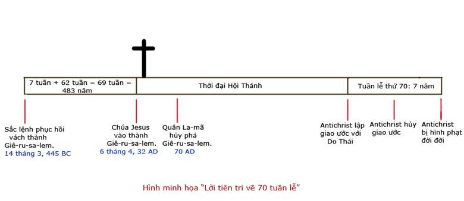

LỜI TIÊN TRI VỀ BẢY MƯƠI TUẦN LỄ
Trần Đình Tâm
Dẫn Nhập:
Đa-ni-ên ở trong nhóm người Do Thái đầu tiên bị bắt qua Ba-by-lôn làm phu tù vào năm 605 BC, ông sống tại Ba-by-lôn trải qua nhiều đời vua, từ các vua của đế quốc Ba-by-lôn là vua Nê-bu-cát-nết-sa, vua Bên-xát-sa cho đến các vua của đế quốc Mê-đô Ba Tư, là vua Đa-ri-út, vua Si-ru. Ông được Đức Chúa Trời dùng một cách đặc biệt để làm chứng về Đức Chúa Trời tại triều đình của các vua ngoại giáo. Nhưng có lẽ công tác kỳ diệu hơn hết của Đa-ni-ên là được Đức Chúa Trời bày tỏ cho biết chương trình của Ngài đối với dân tộc của ông kể từ lúc bị lưu đày cho đến ngày tận cùng của lịch sử loài người. Ông nhận được những khải thị từ Đức Chúa Trời về ngày sau cùng trong thời gian còn bị lưu đày tại Ba-by-lôn, các lời tiên tri của Đa-ni-ên có thể chia làm hai loại: Lời tiên tri về dân ngoại bang, gồm khải tượng về bốn con thú (Đa-ni-ên đoạn 7), khải tượng về con chiên đực và dê đực (Đa-ni-ên đoạn 8); và lời tiên tri về dân Y-sơ-ra-ên, là lời tiên tri rất quan trọng và rất đáng chú ý, còn được gọi là “lời tiên tri về bảy mươi tuần lễ" (Đa-ni-ên đoạn 9). Bài viết nầy chỉ đề cập đến “lời tiên tri về 70 tuần lễ”.
A. Bối cảnh:
“Năm đầu Đa-ri-út, con trai A-suê-ru, về dòng người Mê-đi, đã được lập làm vua cai trị nước người Canh-đê. Đương năm đầu về triều người, ta, Đa-ni-ên, bởi các sách, biết rằng số năm mà lời Đức Giê-hô-va đã phán cùng đấng tiên tri Giê-rê-mi, để cho trọn sự hoang vu thành Giê-ru-sa-lem, là bảy mươi năm.” (Đa-ni-ên 9:1,2)
Đa-ni-ên đã căn cứ vào lời tiên tri của Giê-rê-mi đã được ghi chép và lưu trữ trong thời đó để biết về khoảng thời gian dân Do Thái bị lưu đày là 70 năm. Có lẽ Đa-ni-ên đã tham khảo trong Giê-rê-mi 25:11 “Cả đất nầy sẽ trở nên hoang vu gở lạ, các nước nầy sẽ phục vụ vua Ba-by-lôn trong 70 năm” và ở Giê-rê-mi 29:10 “Vả, Đức Giê-hô-va phán như vầy: Khi 70 năm sẽ mãn cho Ba-by-lôn, ta sẽ thăm viếng các ngươi, sẽ làm trọn lời tốt lành cho các ngươi, khiến các ngươi trở về đất nầy”
Đa-ni-ên đã tính toán rằng: lúc dân Do Thái bị bắt qua Ba-by-lôn là 605 TC, cho đến thời điểm trên, năm thứ nhất dưới triều vua Đa-ri-út là năm 538 TC, cho thấy dân Do Thái đã bị lưu đày được 67 năm, vậy thời gian lưu đày sắp chấm dứt. Từ chổ suy xét cẩn thận Lời Đức Chúa Trời, Đa-ni-ên liền hướng lòng về Chúa và cầu nguyện một cách khẩn thiết cùng với sự kiêng ăn, mặc bao gai và đội tro (bày tỏ tấm lòng ăn năn). Đoạn 9 từ câu 4 đến 19 ghi lại lời cầu nguyện của Đa-ni-ên, chúng ta ghi nhận được vài điều đáng chú ý từ bài cầu nguyện nầy:
- Ông công nhận dân tộc của ông đã phạm tội cùng Chúa, đã chống nghịch lại Chúa, không vâng giữ luật pháp của Chúa, không nghe lời các tiên tri của Đức Chúa Trời.
- Ông công nhận dân tộc ông bị lưu đày khốn khổ, phải chịu cảnh xấu hổ, sỉ nhục chính là hậu quả của sự không vâng lời Chúa.
- Ông công nhận Đức Chúa Trời là công bình khi sửa phạt dân tộc của ông.
- Ông cầu xin sự thương xót của Chúa, xin cơn giận của Chúa xây khỏi dân tộc ông.
- Ông cầu xin sự tha thứ của Đức Chúa Trời cho chính cá nhân ông cũng như cho dân tộc ông.
Đức Chúa Trời nhìn thấy tâm tình của Đa-ni-ên nên sai thiên sứ Gáp-ri-ên đến với ông trong khi ông còn đang khẩn nguyện, thiên sứ dạy dỗ ông và nói với ông:
“Hỡi Đa-ni-ên, bây giờ ta ra để ban sự khôn ngoan và sự hiểu biết cho ngươi. Ngay khi ngươi bắt đầu cầu xin thì Lời đã ban ra, và ta đến để công bố lời đó cho ngươi, vì ngươi rất được yêu quý. Vậy hãy suy nghĩ lời đó và hiểu rõ khải tượng.” (Đa-ni-ên 9:22,23)
Từ 2 câu Thánh Kinh nêu trên (22 và 23), chúng ta nhận thấy vài yếu tố quan trọng đưa đến việc thiên sứ Gáp-ri-ên tuyên bố “lời tiên tri về 70 tuần lễ” (từ câu 24 đến 27):
- Ngay từ lúc Đa-ni-ên bắt đầu cầu nguyện, Chúa đã thấu rõ tấm lòng của ông, cho nên trước khi lời cầu nguyện chấm dứt, Gáp-ri-ên đã nhận được “LỜI” từ Đức Chúa Trời (tức là nội dung của lời tiên tri về 70 tuần lễ).
- Theo lệnh của Đức Chúa Trời, Gáp-ri-ên đến với Đa-ni-ên để “công bố những lời đó cho ông”, vì Chúa nhìn nhận ông là người rất “được yêu quý”, người sắp nhận những khải tượng đặc biệt phải là người được Chúa yêu quý.
- Khải tượng mà Đa-ni-ên sắp sửa nhận được từ Đức Chúa Trời không phải là dể hiểu đối với tâm trí của con người. Chúa muốn ông không phải chỉ “thấy” khải tượng mà thôi nhưng còn phải “suy nghĩ lời đó” và “hiểu rõ khải tượng”. Chúa muốn chúng ta hôm nay cũng phải suy gẫm và hiểu biết Lời Chúa thì mới có thể làm đúng theo sự dạy dỗ được.
- Đức Chúa Trời biết Đa-ni-ên không thể hiểu nổi những điều mà Ngài sắp tỏ ra cho ông, nên sai Gáp-ri-ên đến để ban cho ông “sự khôn ngoan và sự hiểu biết” để ông hiểu rõ sự hiện thấy. Ngày hôm nay, Đức Thánh Linh ở trong chúng ta chính là sự “khôn ngoan và thông sáng” của Đức Chúa Trời để giúp chúng ta hiểu được những lẽ mầu nhiệm trong Lời Chúa.
B. Lời tiên tri về Bảy Mươi Tuần Lễ:
“Có bảy mươi tuần lễ đã được ấn định cho dân ngươi và thành thánh ngươi để chấm dứt sự vi phạm, tiêu trừ tội lỗi, đền chuộc tội ác và đem vào sự công chính đời đời, đóng ấn khải tượng và lời tiên tri, và xức dầu cho Nơi Chí Thánh. Vậy ngươi hãy biết và hiểu rằng từ khi lệnh phục hồi và xây lại Giê-ru-sa-lem cho đến khi Đấng Chịu Xức Dầu xuất hiện, thì được bảy tuần lễ và sáu mươi hai tuần lễ. Thành đó sẽ được xây lại, có đường phố và vách thành, ngay trong thời kỳ khó khăn.
Sau sáu mươi hai tuần lễ ấy, Đấng Chịu Xức Dầu sẽ bị trừ đi và sẽ không có gì cả. Có dân của vị thủ lãnh sắp đến sẽ hủy phá thành và đền thánh. Sự cuối cùng sẽ đến như nước lụt, có sự tranh chiến xãy ra cho đến cuối cuộc chiến, sự hoang tàn đã được ấn định. Thủ lãnh ấy sẽ lập giao ước vững bền với nhiều người trong một tuần lễ, nhưng đến giữa tuần ấy, người sẽ ngưng việc dâng sinh tế và tế lễ chay. Kẻ hủy phá sẽ đến trên cánh của những điều ghê tởm, cho đến kỳ hủy diệt cuối cùng đã được ấn định sẽ giáng trên kẻ hủy phá.” (Đa-ni-ên 9: 24-27)
Có thể nói lời tiên tri “70 tuần lễ” của Đa-ni-ên nêu trên được đánh giá là lời tiên tri quan trọng nhất và đáng chú ý hơn hết trong Cựu Ước. Qua lời tiên tri nầy, Đức Chúa Trời bày tỏ những điểm trọng yếu trong chương trình của Ngài đối với dân Y-sơ-ra-ên, và những chủ điểm nầy đi song song với những điển móc thời gian để tạo nên một cái khung cho “lời tiên tri về 70 tuần lễ”.
Lời tiên tri về “70 tuần lễ” nói trên còn được xem như là một căn cứ mà qua đó giúp cho chúng ta xác định được thời điểm của các lời tiên tri ở các sách khác trong Thánh Kinh, như sách Khải Huyền, Ma-thi-ơ đoạn 24 và một số đoạn khác. Và chính những lời tiên tri ở sách khác trong Thánh Kinh lại bổ túc cho lời tiên tri “70 tuần lễ” của Đa-ni-ên.
1. Thời biểu:
“Có bảy mươi tuần lễ đã được ấn định…” (câu 24a)
Bảy mươi tuần lễ: Nếu dịch sát theo nguyên ngữ Hê-bơ-rơ là “ Seventy ‘sevens’ ”. Trong ngôn ngữ Hê-bơ-rơ, “seven” được dùng để chỉ một đơn vị thời gian được phân ra làm 7 phần; mỗi đơn vị thời gian đó có thể là ngày, tháng, hoặc năm; vậy có thể dịch là “ Bảy mươi ‘đơn vị thời gian’ ”. Theo các học giả Thánh kinh, “đơn vị thời gian” ở đây là NĂM thì thích hợp hơn hết, căn cứ vào dữ liệu sau:
Theo hệ mặt trời, một chu kỳ thời gian là một đường tròn khép kín, tương đương với góc 360 độ (không thể lớn hơn hoặc nhỏ hơn 360 độ). Nếu ta chia hình tròn (360 độ) ra 12 phần, ta sẽ có mỗi phần là 30 độ. Cũng vậy, chúng ta biết chu kỳ thời gian một năm gồm 360 ngày, chia làm 12 tháng, mỗi tháng 30 ngày. Đó là cách xác định thời gian theo Thánh Kinh để giải nghĩa các lời tiên tri.
Chúng ta có: “bảy mươi X đơn vị thời gian” tức là 70 X 7 năm” = 490 năm. Như vậy Đức Chúa Trời ấn định một thời hạn nhất định là 490 năm.
2. Đối tượng:
“Có bảy mươi tuần lễ đã được ấn định cho dân ngươi và thành thánh ngươi” (câu 24a)
+ Dân ngươi: Là dân tộc của Đa-ni-ên, tức là dân Y-sơ-ra-ên.
+ Thành thánh ngươi: Là thành Giê-ru-sa-lem.
Như vậy, lời tiên tri về 70 tuần lễ liên quan đặc biệt đến dân Do Thái và thành Giê-ru-sa-lem.
3. Mục đích của Đức Chúa Trời cho dân Do Thái và thành Giê-ru-sa-lem.
Có 6 mục đích mà Đức Chúa Trời sẽ hoàn thành đối với tuyển dân của Ngài:
+ Chấm dứt sự vi phạm (to finish the transgression) (câu 24b): Ý nghĩa nguyên thủy của “transgression” là sự phản loạn. Lịch sử dân Do Thái là một chuổi dài của sự bất tuân Đức Chúa Trời, hành động chống nghịch cao điểm là chối bỏ Chúa Jesus là Đấng Mê-si. Tuy nhiên, vào thời kỳ sau cùng, dân Do Thái sẽ công nhận Chúa Jesus là Đấng Mê-si của họ.
+ Tiêu trừ tội lỗi (to make an end of sins) (câu 24c): Tội nầy là tội của cả dân tộc Do Thái. Tội chỉ có thể được xóa sạch khi chấp nhận Chúa Jesus là Đấng chuộc tội cho mình. Dân Do Thái sẽ được cứu khỏi tội trong ngày sau rốt: “Vậy thì cả dân Y-sơ-ra-ên sẽ được cứu, như có chép rằng: Đấng giải cứu sẽ đến từ Si-ôn; cất sự vô đạo ra khỏi Gia-cốp” (Rô-ma 11:26,27).
+ Đền chuộc tội ác (to atone for wickedness) (câu 24d): Cho thấy ý nghĩa của sự chết của Chúa Jesus trên thập tự giá. Khi dân Do Thái tin nhận Chúa Jesus họ sẽ hiểu được cái giá mà Chúa Jesus phải trả cho tội lỗi của họ và họ sẽ kinh nghiệm sự cứu rỗi như tất cả những Cơ-đốc nhân khác của mọi thời đại.
+ Đem vào sự công chính đời đời (to bring everlasting righteousness) (câu 24e): Đối với Đức Chúa Trời, dân tộc Do Thái chỉ có thể được Ngài xưng là công chính một khi họ đặt trọn niềm tin nơi Chúa Jesus, là Đấng Mê-si của họ, chứ không phải vì họ tự nhận rằng họ là con cháu của Áp-ra-ham và tuân giữ các lễ nghi tôn giáo. Trong ngày cuối cùng, họ sẽ được xưng là công chính, và với địa vị đó, họ sẽ được dự phần trong vương quốc của Chúa Jesus sau khi chấm dứt 490 năm. Chúa Jesus sẽ cai trị vương quốc trong sự công chính. Dân Y-sơ-ra-ên cũng sẽ được đồng trị với Ngài trong vương quốc ấy: “Đức Giê-hô-va phán: Nầy, những ngày đến, ta sẽ dấy lên cho Đa-vít một Nhánh Công Chính. Ngài sẽ cai trị như một vị vua, cư xử khôn ngoan, thực thi điều công minh chánh trực trong xứ. Trong đời vua ấy, Giu-đa sẽ được cứu; Y-sơ-ra-ên sẽ sống yê ổn. Danh xưng của Đấng ấy là Giê-hô-va Đấng công chính của chúng ta.” (Giê-rê-mi 23:5,6)
+ Đóng ấn khải tượng và lời tiên tri (seal up the vision and prophecy) (câu 24g): Khi Chúa Jesus tái lâm, tất cả những khải tượng và lời tiên tri liên quan đến sự giải cứu dân Do Thái ra khỏi tội lỗi, đem họ đến đức tin nơi Chúa Jesus, được xưng công bình trước mặt Đức Chúa Trời, đã được ứng nghiệm hoàn toàn và được đóng ấn, điều nầy có ý nghĩa là kể từ lúc ấy, sẽ không còn lời tiên tri nào đối với dân Do Thái mà chưa được ứng nghiệm.
+ Xức dầu cho Nơi Chí Thánh (to anoint the most Holy) (câu 24h): Lời tiên tri nầy cho biết sự hình thành một đền thờ mới, là đền thờ thuộc về vương quốc của Chúa Jesus, đền thờ nầy được mô tả trong Ê-xê-chi-ên từ đoạn 41 đến 46, có thể khởi xây dựng ngay vào lúc bắt đầu thời đại một ngàn năm.
4. 69 tuần lễ đầu:
“Vậy ngươi hãy biết và hiểu rằng kể từ khi lệnh phục hồi và xây lại Giê-ru-sa-lem cho đến khi Đấng Chịu Xức Dầu xuất hiện thì được bảy tuần lễ và sáu mươi hai tuần lễ. Thành đó sẽ được xây lại, có đường phố và vách thành, ngay trong thời kỳ khó khăn.” (câu 25)
+ Bảy tuần lễ và sáu mươi hai tuần lễ:
7 tuần lễ + 62 tuần lễ = 69 tuần lễ, hay nếu tính ra số năm là:
69 tuần lễ x 7 năm = 483 năm, hay nếu tính ra số ngày là:
483 năm x 360 ngày = 173.880 ngày (cách viết theo quy ước của Mỹ là 173,880 ngày)
+ Lệnh phục hồi và xây lại Giê-ru-sa-lem: Lời tiên tri cho thấy có một lệnh cho phép phục hồi và xây lại Giê-ru-sa-lem. Chúng ta ghi nhận trong Cựu Ước có 3 chiếu chỉ hay sắc lệnh (Edict, Decree) có liên quan đến vấn đề nầy:
1. Sắc lệnh của vua Si-ru (Cyrus) được ban hành năm 538 BC, được ghi lại trong Ê-xơ-ra 1:1-4. Sắc lệnh nầy cho phép dân Do Thái đang ở Ba-by-lôn được phép hồi hương để xây lại đền thờ.
2. Sắc lệnh của vua Ạt-ta-xét-xe (Artaxerxes Longimanus) được ban hành năm 458 BC, được ghi lại trong Ê-xơ-ra 7:11,17. Sắc lệnh nầy chủ yếu cho phép dân Do Thái tổ chức lại cuộc thờ phượng và các nghi thức dâng sinh tế tại đền thờ mới được xây dựng lại.
3. Sắc lệnh của vua Ạt-ta-xét-xe được ban hành năm 445 BC, được ghi lại trong Nê-hê-mi 2:4-8. Sắc lệnh nầy cho phép dân Do Thái xây dựng lại vách thành (wall) Giê-ru-sa-lem. Sự kiện nầy rất phù hợp với lời tiên tri nêu trên.
Sắc lệnh cho phép dân Giu-đa xây lại vách thành Giê-ru-sa-lem do Nê-hê-mi thỉnh cầu vua Ạt-ta-xét-xe (vua nước Medo-Persia) khi ông làm quan tửu chánh cho vua (Nê-hê-mi 2:1-16). Chúng ta đọc sẽ thấy trong thời điểm ấy mặc dù đền thờ đã được xây lại nhưng các vách thành chung quanh Giê-ru-sa-lem chưa được xây lại, vẫn còn đỗ nát vì bị lửa thiêu đốt: “Ban đêm tôi ra nơi cửa Trũng, đối ngang suối Chó Rừng, và đến cửa Phân, xem xét các vách thành của Giê-ru-sa-lem bị hư nát, và các cửa nó bị lửa thiêu đốt” (câu 13).
Chúng ta cần xác định chính xác thời điểm vua Ạt-ta-xét-xe ban hành sắc lệnh. Căn cứ vào Nê-hê-mi 2:1 “Đương năm thứ hai mươi đời vua Ạt-ta-xét-xe, tháng Ni-san…”. Lịch sử cho biết vua Ạt-ta-xét-xe trị vì từ 465 BC đến 425 BC, như vậy, năm thứ hai mươi đời vua là năm 445 BC, tháng Ni-san, sắc lệnh được ban hành.
Một trong những học giả nghiên cứu Kinh Thánh rất có uy tín và được nhiều học giả khác công nhận là Sir Robert Anderson (1841-1918), Sir Robert Anderson căn cứ vào truyền thống của các vị vua thường chọn ngày đầu tháng hoặc chọn ngày “mặt trăng mới” (new moon) để ban hành các sắc lệnh, ngoài ra ông còn nhờ vào sự trợ giúp của ngành thiên văn học hoàng gia Anh vào năm 1887 (G. B. Airy, Royal Observatory, Greenwich, England), Sir Robert Anderson cho biết sắc lệnh vua Ạt-ta-xét-xe ban hành vào ngày 1 tháng Ni-san năm 445 BC, tương đương với ngày 14 tháng 3 năm 445 BC.
+ Từ khi lệnh phục hồi và xây lại Giê-ru-sa-lem cho đến khi Đấng Chịu Xức Dầu xuất hiện, thì được bảy tuần lễ và sáu mươi hai tuần lễ:
Có 69 tuần lễ, hay 173.880 ngày kể từ khi sắc lệnh xây lại vách thành được ban hành, cho đến khi Đấng Chịu Xức Dầu xuất hiện. Đấng Chịu Xức Dầu (tiếng Hy-lạp là “Christ”, tiếng Hê-bơ-rơ là “Messiah”) tức là Đấng Mê-si của dân Do Thái.
Chúng ta đã biết được sắc lệnh của Ạt-ta-xét-xe ban hành vào ngày 1 tháng Ni-san năm 445 BC theo lịch của người Do Thái (Lunar), cũng là ngày 14 tháng 3 năm 445 BC, theo lịch của Julian. Vậy nếu chúng ta thêm 173.880 ngày, kể từ ngày 1 tháng Ni-san năm 445 BC (14 tháng 3 năm 445 BC), chúng ta sẽ có: ngày 10 tháng Ni-san năm 32 AD, tương đương với ngày 6 tháng 4 năm 32 AD.
Ngày 10 tháng Ni-san năm 32 chính là ngày Chúa Jesus cưỡi lừa vào thành Giê-ru-sa-lem cách vinh quang, đó là ngày Chủ Nhật, còn được gọi là “Palm Sunday”. Sự kiện nầy được ghi lại trong Ma-thi-ơ 21:7-9:
“Hai người (môn đồ) dắt lừa cái và lừa con, trải áo mình trên lưng lừa, và nâng Ngài cưỡi lên. Bấy giờ phần nhiều trong đám đông trải áo mình trên đường, kẻ khác chặt nhánh cây mà rải ra giữa đường. Đoàn dân đi trước và theo sau đều kêu lên rằng: Hô-sa-na, Con vua Đa-vít! Đáng khen ngợi cho Đấng nhân danh Chúa mà đến! Hô-sa-na ở trên nơi rất cao!”
Như vậy, lời tiên tri đã được ứng nghiệm hoàn toàn.
5. Khoảng thời gian không xác định giữa tuần lễ 69 và tuần lễ thứ 70.
“Sau sáu mươi hai tuần lễ ấy, Đấng Chịu Xức Dầu sẽ bị trừ đi và sẽ không có gì cả.”
+ Sau 62 tuần Đấng Chịu Xức Dầu sẽ bị trừ đi (câu 26a): Sau khi Chúa Jesus vào thành Giê-ru-sa-lem cách vinh hiển vào ngày Chủ Nhật 10 tháng Ni-san, thì chỉ vài ngày sau, Chúa Jesus bị đóng đinh trên thập tự giá. Đấng Mê-si của dân Do Thái đã bị chính dân của Ngài khước từ: “Ngài đến trong đất nước Ngài mà dân Ngài không tiếp nhận Ngài” (Giăng 1:11) và chính dân Do Thái đã nhờ vào chính quyền La-mã để kết án tử hình Đấng Mê-si: “Hỡi Y-sơ-ra-ên, hãy nghe lời nầy … các ngươi đã mượn tay độc ác (chính quyền La-mã) mà đóng đinh Ngài trên thập tự giá và giết đi” (Công Vụ Các Sứ Đồ 2:22,23). Chúng ta được biết Chúa Jesus bị đóng đinh và chịu chết vào ngày 14 tháng Ni-san năm 32 AD, nhằm ngày lễ Vượt Qua, tương đương với ngày 10 tháng 4 năm 32 AD.
+ Và sẽ không có gì cả (câu 26b): Điều nầy có nghĩa là khi Đấng Chịu Xức Dầu, là Chúa Jesus bị trừ đi thì lời tiên tri về 70 tuần lễ đã hoàn tất trong giai đoạn đầu tiên là 69 tuần, và đã được “đóng lại”, tức là ngưng lại, không tiếp tục nữa… cho đến thời điểm thích hợp, sẽ bắt đầu tuần lễ thứ 70, tức là tuần cuối cùng. Nói cách khác, “đồng hồ” của Đức Chúa Trời định sẵn 70 tuần lễ (hay 490 năm) cho dân Do Thái đã tạm ngưng lại sau 69 tuần, khoảng thời gian kể từ sau tuần lễ 69 cho đến tuần lễ thứ 70 là thời kỳ Ân Điển, hay còn gọi là thời đại của Hội Thánh. Sau khi Chúa Jesus sống lại, Ngài thăng thiên và ban Đức Thánh Linh xuống để thành lập Hội Thánh trên đất, mở ra thời đại Hội Thánh. Thời đại nầy không xác định được bao lâu, chỉ có Đức Chúa Trời biết mà thôi. Khi Chúa Jesus đến cất Hội Thánh lên trời là lúc thời đại Ân Điển chấm dứt. Sau khi Hội Thánh được cất lên, thế giới sẽ bước vào tuần lễ thứ 70! “đồng hồ” của Đức Chúa Trời bắt đầu chạy!
+ Có dân của vị thủ lãnh sắp đến sẽ phá hủy thành và đền thánh (câu 26c): Lời tiên tri tiếp tục nói về dân Y-sơ-ra-ên, là dân trước đó đã loại trừ Đấng Mê-si: Thành Giê-ru-sa-lem và đền thờ (đền thờ do Xô-rô-ba-bên xây cất, sau đó được trùng tu bởi Hê-rốt đại đế) sẽ bị phá hủy bởi một vị thủ lãnh. Khi các môn đồ chỉ cho Chúa Jesus xem sự tráng lệ của đền thờ, Chúa Jesus cho biết: “Quả thật, ta nói cùng các ngươi, đây sẽ không còn một hòn đá nào chồng trên một hòn đá khác mà không bị đổ xuống” (Ma-thi-ơ 24:2).
Lịch sử đã chứng minh lời tiên tri của Đa-ni-ên và của Chúa Jesus được ứng nghiệm hoàn toàn: Vào năm 70 AD, quân đội La-mã do tướng Titus cầm đầu, đã đánh phá thành Giê-ru-sa-lem, phá đổ vách thành, đốt phá đền thờ và san bằng tất cả, đến nỗi “không còn hòn đá nào chồng trên hòn đá nào”.
+ Sự cuối cùng sẽ đến như nước lụt, có sự tranh chiến xãy ra cho đến cuối cuộc chiến, sự hoang tàn đã được ấn định (câu 26d): Những lời nầy mô tả quân đội La Mã bao vây thành Giê-ru-sa-lem do Titus cầm đầu. Lịch sử cho chúng ta biết thành Giê-ru-sa-lem bị quân La Mã phong tỏa trong nhiều tháng, cuộc vây hãm lâu dài khiến xãy ra nạn đói trầm trọng, người ta phải ăn thịt người, đường phố đầy xác người. Sử gia Josephus cho biết có 1.100.000 người chết, 97.000 người bị bắt làm phu tù, đền thờ bị đốt phá, trở thành nơi hoang vu như chưa từng có người ở.
6. Tuần lễ thứ 70: Tuần lễ cuối cùng.
“Thủ lãnh ấy sẽ lập giao ước vững bền với nhiều người trong một tuần lễ, nhưng đến giữa tuần ấy, người sẽ ngưng việc dâng sinh tế và tế lễ chay. Kẻ hủy phá sẽ đến trên cánh của những điều ghê tởm, cho đến kỳ hủy diệt cuối cùng đã được ấn định sẽ giáng trên kẻ hủy phá.” (câu 27)
+ Trong một tuần lễ: Chúng ta đã biết thời hạn Đức Chúa Trời ấn định cho dân Y-sơ-ra-ên là 70 tuần lễ, tuần lễ 69 đã kết thúc sau sự chết của Chúa Jesus, câu 27 trên đây đề cập đến “một tuần lễ”. Như vậy, lời tiên tri trong câu 27 phải xãy ra vào tuần lễ thứ 70. (“đồng hồ” của Đức Chúa Trời bắt đầu chạy cho đến hết tuần lễ 70).
Tuần lễ cuối (1 tuần) X 7 năm = 7 năm. Vậy, tuần lễ cuối cùng sẽ kéo dài đúng 7 năm.
+ Lập giao ước với nhiều người: Chúng ta cần xác định “nhiều người” (the many) là nhóm người nào? Vì lời tiên tri 70 tuần lễ chủ yếu nói về dân Do Thái nên lẽ đương nhiên cụm từ “nhiều người” phải chỉ về dân Do Thái.
+ Đến giữa tuần ấy: Tuần lễ cuối cùng gồm 7 năm, đến “giữa tuần” cho chúng ta biết thời điểm vào lúc 3 năm rưỡi đầu kết thúc và bắt đầu 3 năm rưỡi sau cùng.
+ Lập giao ước với nhiều người trong một tuần lễ, nhưng đến giữa tuần ấy, người sẽ ngưng việc dâng sinh tế và tế lễ chay (câu 27a): Đến đây chúng ta có hiểu như sau: Vị thủ lãnh sẽ lập giao ước với dân Do Thái trong 7 năm, đến giữa năm, tức là vừa kết thúc 3 năm rưỡi, vị thủ lãnh sẽ ban lệnh ngăn cấm việc dâng tế lễ.
Một câu hỏi được nêu lên: Vị thủ lãnh lập giao ước gì với dân Do Thái?
Chúng ta hãy suy gẫm sự kiện: Vị thủ lãnh sẽ ngưng việc “dâng sinh tế và tế lễ chay” (stop to sacrifice and grain offering), công việc dâng sinh tế hoặc dâng của lễ chay là các nghi lễ do Đức Chúa Trời thiết lập cho dân Y-sơ-ra-ên được ghi chép đầy đủ trong Lê-vi-ký đoạn 1 đến 4. Tất cả nghi thức dâng của lễ trên đều được thực hiện bên trong đền thờ. Chúng ta đã biết đền thờ đã bị quân đội La-mã tiêu hủy hoàn toàn vào năm 70 AD. Ngày nay, vị trí đền thờ ấy là đền thờ Hồi Giáo The Dome of The Rock. Từ đó, chúng ta có thể suy ra rằng vị thủ lãnh kia sẽ lập giao ước với dân Do Thái, cho phép dân Do Thái xây lại đền thờ mà không gặp sự chống đối nào từ khối Hồi Giáo, và dân Do Thái sẽ tái lập lại các nghi thức dâng sinh tế trong đền thờ.
Lời tiên tri cho biết sau 3 năm rưỡi, vị thủ lãnh sẽ trở mặt với dân Do Thái, sẽ hủy bỏ giao ước, ngăn cấm tất cả các nghi thức thờ phượng trong đền thờ.
+ Thủ lãnh ấy (he): Câu hỏi rất quan trọng được nêu lên: Vị thủ lãnh nầy là ai? Có vẻ như vị nầy cũng là một với vị thủ lãnh được bàn đến ở câu bên trên (câu 26c), là vị tướng La-mã Titus, nhưng như vậy thì thật là vô lý (vì Titus đã chết từ lâu rồi!), tuy nhiên, nếu chúng ta quay trở lại câu 26c và chú ý đến cụm từ đi trước từ “vị thủ lãnh” sẽ thấy là: “có dân của vị thủ lãnh sắp đến sẽ phá hủy thành …” (the people of the prince), như thế, vị tướng Titus được kể như người đại diện cho người dân, mà chúng ta biết đó là dân La-mã. Từ lập luận đó, chúng ta có thể dễ dàng suy ra rằng vị thủ lãnh xuất hiện trong tuần lễ thứ 70 (câu 27) có nguồn gốc từ trong đế quốc La-mã.
Căn cứ vào Khải Huyền đoạn 13, Đa-ni-ên đoạn 7, chúng ta có thể xác định danh tánh của vị thủ lãnh nầy, hắn chính là Kẻ Chống Chúa (Antichrist), hắn sẽ áp dụng chính sách bắt bớ dân Do Thái và những người tin Chúa một cách dữ dội. Cuộc bắt bớ sẽ kéo dài trong 3 năm rưỡi sau cùng.
+ Kẻ hủy phá sẽ đến trên cánh của những điều ghê tởm (on the wing of abomination will come one who makes desolate) (câu 27b): Có thể hiểu như sau: “Kẻ Chống Chúa (Antichrist) sẽ thực hiện công việc gớm ghiếc làm cho hoang tàn trong đền thờ.”
II Tê-sa-lô-ni-ca 2:4, Phao-lô cho thấy hành động của Kẻ Chống Chúa tại đền thờ: “Tức là kẻ đối địch, tôn mình lên trên mọi sự mà người ta xưng là Đức Chúa Trời hoặc người ta thờ lạy, rất đỗi ngồi trong đền Đức Chúa Trời, chính mình tự xưng là Đức Chúa Trời”.
Khải Huyền 13:6 cho biết “con thú” tức là Antichrist được Sa-tan ban cho quyền nói phạm đến đền thờ: “Nó mở miệng nói những lời xúc phạm đến Đức Chúa Trời, xúc phạm đến danh Ngài, đền tạm của Ngài và những người ở trên trời.”
+ Cho đến kỳ hủy diệt cuối cùng đã được ấn định sẽ giáng trên kẻ hủy phá. (câu 27c)
Phần cuối cùng của lời tiên tri 70 tuần lễ cho thấy số phận của Antichrist: Vào thời điểm cuối cùng của tuần lễ thứ 70, Chúa Jesus sẽ từ trời tái lâm cùng với các đạo binh trên trời và trừng phạt Antichrist: “Tôi (sứ đồ Giăng) lại thấy con thú (Antichrist) và các vua thế gian cùng những quân đội mình nhóm lại đặng tranh chiến với Đấng cưỡi ngựa (Chúa Jesus), và với đạo binh của Ngài (thiên sứ). Nhưng con thú bị bắt và tiên tri giả là kẻ làm phép lạ trước mặt con thú … cả hai đều đương sống bị quăng xuống hồ lửa có diêm cháy bừng bừng.” (Khải Huyền 19:19,20).

Tháng 1 năm 2010.
Tài liệu tham khảo:
+ Sir Robert Enderson, The coming Prince .
+ Bryan P. Mistele, The Truth About Prophecy in the Bible And Its Fulfillment.
+ John F. Walvoord, Every Prophecy of the Bible.